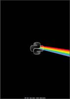
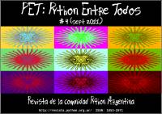
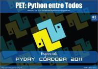
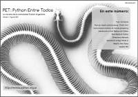

Esta página contiene enlaces a los números publicados de la revista Python entre todos en 2012 - 2011 - 2010.
Página web: Revista Python entre todos

Número 6 - 2012 noviembre
Descarga (PDF 8.9 MB español)
Número 5 - 2012 marzo
Descarga (PDF 5.1 MB español)

Número 4 - 2011 septiembre
Descarga (PDF 3.4 MB español)

Número 3 - 2011 julio
Descarga (PDF 10.5 MB español)
Número 2 - 2011 mayo
Descarga (PDF 7.8 MB español)

Número 1 - 2010 agosto
Descarga (PDF 6.6 MB español)